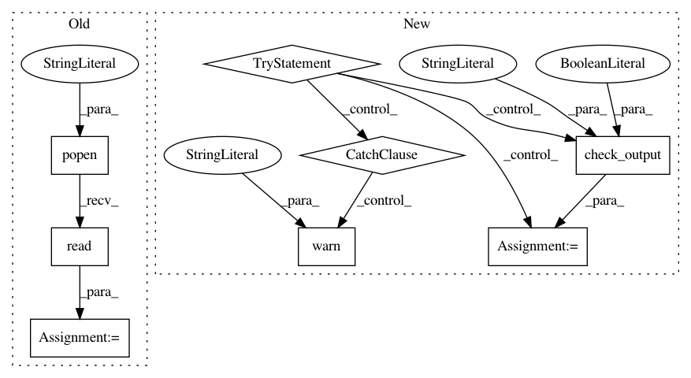

b99870ac55f3773ff2cd59fc298f9a4f987589da,src/main.py,,main,#Any#,46
Before Change
log.info("Saved config to %s", config_file)
git_branch_name = os.popen("git rev-parse --abbrev-ref HEAD").read().strip()
git_sha = os.popen("git rev-parse HEAD").read().strip()
log.info("On git branch {} at checkpoint {}.".format(git_branch_name, git_sha))
seed = random.randint(1, 10000) if args.random_seed < 0 else args.random_seed
random.seed(seed)
After Change
config.write_params(args, config_file)
log.info("Saved config to %s", config_file)
try:
log.info("Waiting on git info....")
git_branch_name = subprocess.check_output("git rev-parse --abbrev-ref HEAD", stderr=subprocess.STDOUT, timeout=10, shell=True)
git_sha = subprocess.check_output("git rev-parse HEAD", stderr=subprocess.STDOUT, timeout=10, shell=True)
log.info("On git branch {} at checkpoint {}.".format(git_branch_name, git_sha))
except subprocess.TimeoutExpired:
git_branch_name.kill()
log.warn("Git info not found. Moving right along...")
seed = random.randint(1, 10000) if args.random_seed < 0 else args.random_seed
random.seed(seed)
torch.manual_seed(seed)
log.info("Using random seed %d", seed)
In pattern: SUPERPATTERN
Frequency: 3
Non-data size: 8
Instances
Project Name: jsalt18-sentence-repl/jiant
Commit Name: b99870ac55f3773ff2cd59fc298f9a4f987589da
Time: 2018-06-29
Author: elliepavlick@gmail.com
File Name: src/main.py
Class Name:
Method Name: main
Project Name: jhfjhfj1/autokeras
Commit Name: 85da4149f4100ca0aab1257311a277dcd2e11e9e
Time: 2018-11-11
Author: lin.yang@tamu.edu
File Name: autokeras/utils.py
Class Name:
Method Name: get_device